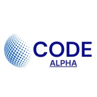

👋 Hello, I am
Computer Science Engineer specializing in Machine Learning, AI Automation, and Federated Learning. I design and deploy end-to-end AI pipelines, automate workflows, and build solutions for real-world challenges.
I am a Computer Science student at the University of Dhaka with a strong focus on Data Science, Machine Learning,Artificial Intelligence and AI Automation. I enjoy solving real-world problems through data-driven thinking and building practical intelligent systems that are both effective and scalable.
My interests include predictive modeling, deep learning, federated learning, automation workflows, and applied AI research. Through academic projects, internships, and continuous self-learning, I have developed hands-on experience in building machine learning models, analyzing data, and creating end-to-end solutions.

University of Dhaka
Dhaka,Bangladesh
Masjid Mission Academy
Rajshahi, Bangladesh
Hummyun Reza High School
Chapai-Nawabgonj, Rajshahi
Federated Learning combined with Explainable AI (SHAP) to predict population growth and life expectancy, supporting healthcare and education planning.
Developed ML models to forecast daily and hourly concentrations of Carbon Monoxide and Nitrogen Dioxide using historical environmental data.
Built an NLP model to analyze customer sentiments from Amazon product reviews, classifying feedback into positive, negative, and neutral categories.
Developed a collaborative filtering-based recommendation system that suggests movies to users based on their viewing history and preferences.
Implemented a deep learning CNN model to recognize handwritten characters and digits from images with high accuracy.
Designed an ML model to evaluate creditworthiness of individuals based on financial history and risk-related factors.
Built a regression model to predict house prices based on location, size, amenities, and other key features using real estate datasets.
Developed a classification model to predict customer churn for telecom data, helping businesses retain high-risk customers proactively.
Built an anomaly detection model to identify fraudulent financial transactions from imbalanced datasets with high precision.
Developed an NLP pipeline to classify tweet sentiments as positive, negative, or neutral using TF-IDF and machine learning.
Built a time-series forecasting model using LSTM and ARIMA to predict stock prices based on historical market data.
Built an intelligent email scheduling system that automates personalized email campaigns based on user behavior and time-zone optimization.
Designed multi-step workflow automations using n8n to connect APIs, databases, and communication tools without manual intervention.
Developed an AI-powered FAQ chatbot using NLP to handle common user queries intelligently with fallback escalation to human agents.
Created an RPA bot to extract, validate, and store invoice data from PDFs automatically, reducing manual data entry by 90%.
Built an automation tool that schedules and posts content to multiple social media platforms from a single dashboard using APIs.
Designed a reusable automated data cleaning pipeline to handle missing values, outliers, encoding, and feature scaling in datasets.
Built an AI assistant that answers medical queries, analyzes symptoms, and suggests preliminary diagnoses using a knowledge-based NLP model.
Developed a personalized AI tutor that adapts learning content based on student performance, providing hints and explanations dynamically.
Designed a reinforcement learning model for autonomous drone pathfinding that avoids obstacles in dynamic environments.
Built an AI system that analyzes live traffic patterns and dynamically adjusts signal timings to reduce congestion.
Developed a voice-activated smart home assistant that controls devices, answers queries, and sets reminders using speech recognition.
Created an intelligent resume screening tool that ranks candidates based on job description matching using NLP similarity scoring.
Built a generative AI system that creates unique digital artwork from text prompts using diffusion models and style transfer techniques.
Developed a generative model that composes original music pieces based on mood, tempo, and genre prompts using deep learning.
Created an LLM-based tool that generates SEO-optimized blog articles from topic keywords with structured headings and human-like tone.
Built a generative AI tool that creates compelling product advertisement copy and visuals from simple product descriptions.
Developed an interactive storytelling chatbot that generates dynamic, branching narratives based on user choices using LLMs.
Created a generative AI system that designs unique logos from brand name and style inputs using text-to-image models.
Built a real-time face recognition system for automated attendance marking using deep learning facial embeddings.
Developed a YOLO-based object detection system to track products on retail shelves and detect out-of-stock items automatically.
Built a CNN-based model to detect abnormalities in medical images (X-ray/MRI), assisting radiologists in early diagnosis.
Developed a deep learning model to accurately classify traffic signs in real-time for autonomous vehicle applications.
Created a real-time hand gesture recognition system using MediaPipe and CNN that maps gestures to computer commands.
Built an OCR-based license plate detection and recognition system for automated vehicle entry systems using OpenCV and deep learning.
Designed an interactive Power BI dashboard to visualize sales KPIs, regional performance, and revenue trends for business decision-making.
Applied K-Means and hierarchical clustering to segment customers by behavior, enabling targeted marketing strategies.
Analyzed e-commerce transaction data to uncover purchasing trends, peak seasons, and product performance insights.
Performed exploratory data analysis on patient records to identify risk factors, treatment outcomes, and operational inefficiencies.
Analyzed financial datasets to identify credit risk, loan default probabilities, and investment risk using statistical modeling.
Authors: MD Raihan Ali, Sajin Sannasi · Supervisor: Asst. Prof. Anichur Rahman
Dept. of Computer Science and Engineering · NITER, University of Dhaka
Exploring hybrid feature extraction for NLP and comparing performance with deep learning CNN architectures.
National Institute of Textile Engineering & Research (NITER)
Participated in the International General Science Olympiad for Private Constituent Institutions of the University of Dhaka, organized by Research and Integrated Thought Ltd. (RIT).
Achieved IELTS Band Score of 7.5, demonstrating strong English proficiency in academic and professional communication.
Completed an intensive robotic programming and hardware camp organized by Bangladesh Flying Labs, Savar, Dhaka. Certificate ID: 22020224.
A comprehensive beginner-friendly guide to understanding research methodology, academic writing, and scientific thinking for students.
Makes machine learning approachable and enjoyable — covering core concepts, real-world examples, and hands-on intuition for aspiring data scientists.
Deep dives into advanced ML algorithms, model optimization, ensemble methods, and cutting-edge techniques for experienced practitioners.
A practical guide to automating repetitive tasks using Python and modern tools — saving time, reducing errors, and boosting productivity.
Explores how AI tools can be used to create content, automate workflows, and build projects — a guide for the modern AI-first creator.
Whether it's a research collaboration, ML project, internship, freelance work, or just a tech conversation — feel free to reach out!
mrali02@niter.edu.bd
+880 1601306727
Dhaka, Bangladesh